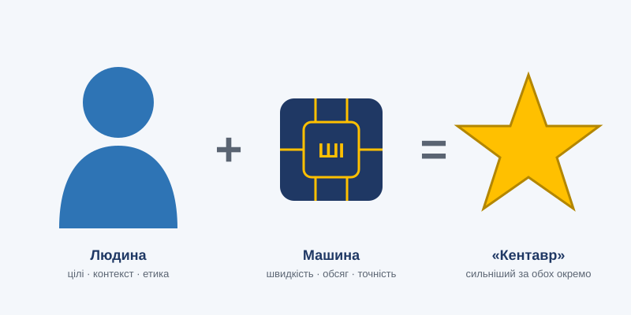

Тема 14. Когнітивне посилення людини

План заняття: цілі, навчальні питання, розподіл часу
Вид заняття: семінар.
Час: 2 години (90 хв).
Місце: навчальний клас.
Навчальні цілі:
- Ознайомити з моделями співпраці людини та ШІ.
- Сформувати розуміння ризиків когнітивної залежності та втрати навичок.
- Навчити будувати особисту стратегію використання ШІ без деградації професійних навичок.
Навчальні питання:
- Посилення інтелекту та моделі співпраці «людина — ШІ».
- Зовнішня пам'ять і когнітивна залежність.
- Як посилюватися, а не деградувати.
Матеріальне забезпечення: проектор, фліпчарт, бланки «Особистий аудит».
Розподіл часу:
| Етап | Зміст | Час |
|---|---|---|
| Вступна частина | Тема, цілі. Питання: «Чий номер телефону ви пам'ятаєте напам'ять?» | 10 хв |
| Навчальне питання 1 | Кентаврівські шахи, моделі співпраці. Обговорення | 20 хв |
| Навчальне питання 2 | Ефекти Google і GPS, когнітивне вивантаження | 15 хв |
| Навчальне питання 3 | Практичне завдання «Особистий аудит» | 35 хв |
| Заключна частина | Підсумки | 10 хв |
Методичні вказівки викладачу: наведіть приклади навичок, які оператор БПЛА має зберігати без автоматики: ручне пілотування при відмові стабілізації, орієнтування за картою без GNSS, усна доповідь без шаблону.
Навчальний матеріал
14.1. Ідея посилення інтелекту
1962 року Дуглас Енгельбарт, винахідник комп'ютерної миші, опублікував працю «Посилення людського інтелекту». Його ідея: комп'ютери мають не замінювати людей, а підсилювати їхню здатність розв'язувати складні проблеми. Сьогодні ця ідея стає реальністю.
Шахи дають показовий приклад. Після перемоги Deep Blue над Каспаровим з'явилися «кентаврівські» шахи, де людина грає разом з комп'ютером. Команди «людина + машина» тривалий час перемагали як найсильніших гросмейстерів, так і найсильніші програми окремо. Секрет був не в силі гравця чи комп'ютера, а в якості взаємодії.
14.2. Моделі співпраці людини та ШІ
| Модель | Опис | Приклад |
|---|---|---|
| Інструмент | ШІ виконує конкретну команду | Переклад тексту |
| Асистент | ШІ пропонує, людина вирішує | Підказки в коді, варіанти рішень |
| Колега | Спільна робота над задачею, розподіл ролей | Аналітик і ШІ разом досліджують дані |
| Делегат | Людина доручає задачу повністю, перевіряє результат | Агент готує звіт |
| Наставник / критик | ШІ перевіряє та навчає людину | Пошук помилок у плані, тьюторинг |
Принцип розподілу: машині дістається те, у чому вона сильніша (швидкість, обсяг, точність, невтомність), людині — те, у чому сильніша вона (цілі, контекст, етика, відповідальність, творчість, робота з новим).
14.3. «Другий мозок»: зовнішня пам'ять
Люди завжди виносили пам'ять назовні: наскельні малюнки, письмо, книги, бібліотеки, інтернет. Тепер з'явилися системи, які не лише зберігають, а й розуміють збережене:
- персональні бази знань з семантичним пошуком;
- ШІ-асистенти, що пам'ятають контекст ваших проєктів;
- автоматичні конспекти нарад і лекцій;
- пошук за змістом, а не за ключовими словами.
Філософи Енді Кларк і Девід Чалмерс запропонували концепцію розширеного розуму (extended mind): якщо зовнішній пристрій надійно виконує когнітивну функцію, він фактично стає частиною нашого мислення.
14.4. Тіньовий бік: когнітивна залежність
Ефект Google: люди гірше запам'ятовують інформацію, якщо знають, що її можна легко знайти.
Ефект GPS: постійне використання навігатора погіршує просторову орієнтацію.
Ефект генеративного ШІ: якщо ШІ завжди пише за нас, ми втрачаємо здатність формулювати думки.
Дослідження показують, що надмірне покладання на ШІ може:
- знижувати критичне мислення;
- зменшувати глибину розуміння матеріалу;
- погіршувати пам'ять про власну роботу («я не пам'ятаю, що написав, бо це писав ШІ»);
- зменшувати різноманіття ідей, бо всі отримують схожі відповіді.
14.5. Як посилюватися, а не деградувати
Правило «спочатку сам». Спершу спробуйте розв'язати задачу самостійно, потім звіртеся з ШІ.
ШІ як спаринг-партнер. Просіть не відповідь, а критику вашої відповіді.
Свідоме збереження ключових навичок. Визначте, які навички мають працювати без техніки: орієнтування на місцевості, усний рахунок, надання першої допомоги, ручне пілотування.
Розуміння, а не копіювання. Не використовуйте результат, якого не можете пояснити.
Навчання через ШІ. Просіть пояснень, прикладів, запитань для самоперевірки.
Регулярна «тренувальна» робота без ШІ, як спортсмен, що тренується з обтяженням.
14.6. Фармакологічне та технологічне посилення
Окрім ШІ, існують інші способи посилення когнітивних функцій:
- ноотропи: доказова база для здорових людей здебільшого слабка, є ризики;
- нейростимуляція: експериментальна, неоднозначні результати;
- нейрофідбек: тренування саморегуляції;
- базові «технології», ефективність яких доведена: сон, фізична активність, харчування, медитація, навчання.
Найпотужніші засоби когнітивного посилення залишаються найпростішими.
Висновки
- Найкращі результати дає не ШІ і не людина окремо, а якісна співпраця.
- Зовнішні когнітивні інструменти стають частиною нашого мислення.
- Свідоме використання ШІ посилює людину, а бездумне послаблює.
Запитання для роздумів
- Яку модель співпраці з ШІ ви використовуєте найчастіше? Чи оптимальна вона?
- Які три навички ви свідомо зберігатимете, навіть якщо ШІ робить це краще?
Практичне завдання
«Особистий аудит» (індивідуально, 35 хв).
- Перелічіть 5–7 задач, у яких ви використовуєте ШІ або автоматику (у навчанні, на службі, у побуті).
- Для кожної визначте модель співпраці з таблиці 14.2.
- Позначте задачі, де є ризик втрати власної навички.
- Визначте три ключові професійні навички, які ви зобов'язуєтеся підтримувати без технічних засобів, і як саме ви їх тренуватимете (частота, спосіб).
Критерії оцінювання (2 бали): глибина аналізу (1 бал), конкретність плану підтримки навичок (1 бал).
Тест для самоконтролю
Обери відповідь у кожному запитанні й натисни «Перевірити відповіді».